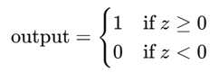

Well posed learning problems
Well-posed (not comparable) (mathematics)Having a unique solution whose value changes only slightly if
initial conditions change slightly.
Definition: A computer program is said to learn from experience E with
respect to some class of tasks T and performance measure P, if its performance at tasks in T, as measured by
P, improves with experience E.
Task
erformance Measure
Training Experience
Real world example :
Throwing stone in river
Game(Chess / Cricket etc.)
Commute :
Shopping :
Eating out :

What is perceptron
A perceptron is a type of artificial neuron used as a building
block in neural networks. It is one of the simplest forms of a neural network model, introduced by Frank
Rosenblatt in 1958. The perceptron is a binary classifier, which means it can distinguish between two
classes.
Key Components of a Perceptron:
Inputs: The
perceptron receives multiple input values, typically represented as a vector x=[x1,x2,…,xn]\mathbf{x} =
[x_1, x_2, \ldots, x_n]x=[x1,x2,…,xn].
Weights: Each input is associated with a weight
w=[w1,w2,…,wn]\mathbf{w} = [w_1, w_2, \ldots, w_n]w=[w1,w2,…,wn], which indicates the importance of the
input. The weights are adjustable parameters.
Bias: A bias term b is added to the weighted sum of the
inputs, allowing the model to shift the decision boundary. It can be considered as an additional input with
a fixed value of 1.
Activation Function: The perceptron uses an activation
function to decide the output. The most common activation function for a perceptron is the step function,
which outputs a binary result (0 or 1).
How It Works
1. Weighted Sum: The perceptron computes a weighted sum of the inputs:
z=w.x+b=w1x1+w2x2+...+wnxn+b
2. Activation: The output is determined by applying the activation function to the weight sum. In the
case of a step function:

Learning Process:
Training: The perceptron learns by adjusting its weights based on the error between the predicted
output and the actual output. The weights are updated using the perceptron learning rule, which adjusts the
weights in proportion to the error.
Convergence: If the data is linearly separable, the perceptron learning algorithm is guaranteed to
converge, meaning it will find a set of weights that correctly classifies the training data.
Limitations:
Linear Separability: A single-layer perceptron can only solve problems where the data is linearly
separable. It cannot solve problems like XOR, where the classes cannot be separated by a straight line.
Complexity: For more complex problems, perceptrons can be combined into multi-layer networks, known
as Multi-Layer Perceptrons (MLPs), which are capable of solving non-linear problems.
Applications:
Basic Classification: Early applications included simple binary classification tasks, like distinguishing between different patterns.
Foundational to Neural Networks: The perceptron is a foundational concept in the development of modern neural networks and deep learning models.